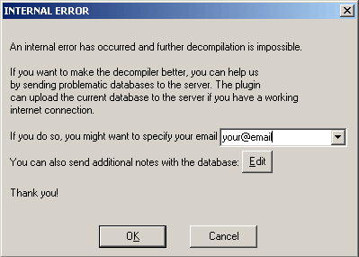

Failures and troubleshooting
The following failure categories exist:
- a crash or access violation
- internal consistency check failure (interr)
- graceful failure to decompile a function
- incorrect output text
- inefficient/unclear/suboptimal output text
The current focus is on producing a correct output for any correct function. The decompiler should not crash, fail, or produce incorrect output for a valid input. Please file a bugreport if this happens.
The decompiler has an extensive set of internal checks and assertions. For example, it does not produce code which dereferences a “void*” pointer. On the other hand, the produced code is not supposed to be compilable and many compilers will complain about it. This is a deliberate choice of not making the output 100% compilable because the goal is not to recompile the code but to let humans analyze it faster.
The decompiler uses some C++ constructs in the output text. Their use is restricted to constructs which cannot be represented in C (the most notable example is passing structures to functions by value).
Internal errors
When the decompiler detects an internal inconsistency, it displays a message box with the error code. It also proposes you to send the database to the hex-rays.com server:

It is really difficult (almost impossible) to reproduce bugs without a sample database, so please send it to the server. To facilitate things, the decompiler saves its internal state to the database, which is really handy if the error occurs after hours and hours of decompilation.
It is impossible to decompile anything after an internal error. Please reload the database, or better, restart IDA.
Graceful failures
When the decompiler gracefully fails on a function, it will display one of the following messages. In general, there is no need to file a bugreport about a failure except if you see that the error message should not be displayed.
- cannot convert to microcode
- not enough memory
- invalid basic block
- positive sp value has been found
- prolog analysis failed
- switch analysis failed
- exception analysis failed
- stack frame is too big
- local variable allocation failed
- 16-bit functions are not supported
- call analysis failed
- function frame is wrong
- undefined or illegal type
- inconsistent database information
- wrong basic type sizes in compiler settings
- redecompilation has been required
- could not compute fpu stack states
- max recursion depth reached during lvar allocation
- variables would overlap
- partially initialized variable
- too complex function
- no license available
- only 32-bit functions can be decompiled for the current database
- only 64-bit functions can be decompiled for the current database
- already decompiling a function
- far memory model is supported only for pc
- special segments cannot be decompiled
- too big function
- bad input ranges
- current architecture is not supported
- bad instruction in the delay slot
Please read the Troubleshooting section about the possible actions.
cannot convert to microcode
This error means that the decompiler could not translate an instruction at the specified address into microcode. Please check the instruction and its length. If it looks like a regular instruction used in the compiler generated code and its length is correct, file a bugreport.
not enough memory
The error message is self-explanatory. While it should not happen very often, it still can be seen on functions with huge stacks. No need to report this bug. Hopefully the next version will handle functions with huge stack more efficiently.
Please restart IDA after this error message.
invalid basic block
This error means that at the specified address there is a basic block, which does not end properly. For example, it jumps out of the function, ends with a non-instruction, or simply contains garbage. If you can, try to correct the situation by modifying the function boundaries, creating instructions, or playing with function tails. Usually this error happens with malformed functions.
If the error happens because of a call, which does not return, marking the called function as “noret” will help. If the call is indirect, adding a cross reference to a “noret” function will help too.
If this error occurs on a database created by an old version of IDA, try to reanalyze the program before decompiling it. In general, it is better to use the latest version of IDA to create the databases for decompilation.
Unrecognized table jumps may lead to this failure too.
positive sp value has been found
The stack pointer at the specified address is higher than the initial stack pointer. Functions behaving so strangely cannot be decompiled. If you see that the stack pointer values are incorrect, modify them with the Alt-K (Edit, Functions, Change stack pointer) command in IDA.
prolog analysis failed
Analysis of the function prolog has failed. Currently there is not much you can do but you will not see this error very often. The decompiler will try to produce code with prolog instructions rather than stopping because of this failure.
switch analysis failed
The switch idiom (an indirect jump) at the specified address could not be analyzed. You may specify the switch idiom manually using Edit, Other, Specify switch idiom.
If this error occurs on a database created by an old version of IDA, try to delete the offending instruction and recreate it. Doing so will reanalyze it and might fix the error because newer versions of IDA handle switches much better than older versions.
exception analysis failed
This error message should not occur because the current version will happily decompile any function and just ignore any exception handlers and related code.
stack frame is too big
Since the stack analysis requires lots of memory, the decompiler will refuse to handle any function with the unaliased stack bigger than 1 MB.
local variable allocation failed
This error message means that the decompiler could not allocate local variables with the registers and stack locations. You will see this error message only if you have enabled HO_IGNORE_OVERLAPS in the configuration file. If overlapped variables are allowed in the output, they are displayed in red.
Please check the prototypes of all involved functions, including the current one. Variables types and definitions may cause this error too.
Updating the function stack frame and creating correct stack variables too may help solve the problem.
If you got this error after some manipulations with the function type or variable types, you may reset the information about the current function (Edit, Other, Reset decompiler information) and start afresh.
16-bit functions are not supported
The message text says it all. While the decompiler itself can be fine tuned to decompile 16-bit code, this is not a priority.
call analysis failed
This is the most painful error message but it is also something you can do something about. In short, this message means that the decompiler could not determine the calling convention and the call parameters. If this is a direct non-variadic call, you can fix it by specifying the callee type: just jump to the callee and hit Y to specify the type. For variadic functions too it is a good idea to specify the type, but the call analysis could still fail because the decompiler has to find out the actual number of arguments in the call. We would recommend to start by checking the stack pointer in the whole function. Get rid of any incorrect stack pointer values. Second, check the types of all called functions. If the type of a called function is wrong, it can interfere with other calls and lead to a failure. Here is a small example:
push eax
push edx
push eax
call f1
call f2
If f1 is defined as a __stdcall function of 3 arguments, and f2 is a function of 1 argument, the call analysis will fail because we need in total 4 arguments and only 3 arguments are pushed onto the stack.
If the error occurs on an indirect call, please specify the operand type (Set operand type… command; action SetOpType) of the call instruction. Also, adding an xref to a function of the desired type from the call instruction will work. The decompiler will use the type of the referenced function.
If all input types are correct and the stack pointer values are correct but the decompiler still fails, please file a bugreport.
function frame is wrong
This is a rare error message. It means that something is wrong with the function stack frame. The most probable cause is that the return address area is missing in the frame or the function farness (far/near) does not match it.
undefined or illegal type
This error can occur if a reference to a named type (a typedef) is made but the type is undefined. The most common case is when a type library (like vc6win.til) is unloaded. This may invalidate all references to all types defined in it.
This error also occurs when a type definition is illegal or incorrect. To fix an undefined ordinal type, open the local types windows (Shift-F1) and redefine the missing type.
inconsistent database information
Currently this error means that the function chunk information is incorrect. Try to redefine (delete and recreate) the function.
wrong basic type sizes in compiler settings
Some basic type sizes are incorrect. The decompiler requires that
- sizeof(int) == 4
- sizeof(enum) == 4
Please check the type sizes in the Options, Compiler dialog box and modify them if they are incorrect.
Also ensure that the correct memory model is selected: “near data, near code”.
Finally, the pointer size must be:
for 32-bit applications use “near 32bit, far 48bit”
for 64-bit applications use “64bit”.
redecompilation has been required
This is an internal error code and should not be visible to the end user. If it still gets displayed, please file a bugreport.
could not compute fpu stack states
The decompiler failed to trace the FPU stack pointer. Please check the called function types, this is the only thing available for the moment. We will introduce workarounds and corrective commands in the future. For more information about floating point support, please follow this link.
max recursion depth reached during lvar allocation
Please file a bugreport, normally this error message should not be displayed.
variables would overlap
This is a variant of the variable allocation failure error. You will see this error message only if you have enabled HO_IGNORE_OVERLAPS in the configuration file. If overlapped variables are allowed in the output, they are displayed in red.
partially initialized variable
A partially initialized variable has been detected. Wrong stack trace can induce this error, please check the stack pointer.
too complex function
The function is too big or too complex. Unfortunately there is nothing the user can do to avoid this error.
no license available
IDA could not locate your decompiler license.
only 32-bit functions can be decompiled for the current database
This error message will not currently be displayed.
only 64-bit functions can be decompiled for the current database
IDA64 can currently decompile only 64-bit functions. To decompile 32-bit functions please use IDA32.
already decompiling a function
An attempt to decompile a function while decompiling another function has been detected. Currently only one function can be decompiled at once.
far memory model is supported only for pc
Please check the data and code memory models in the Options, Compiler dialog. If necessary, reset them to ‘near’ models.
special segments cannot be decompiled
The current function belongs to a special segment (e.g. “extern” segment). Such segments do not contain any real code, they contain just pointers to imported functions. The function body is located in some other dynamic library. Therefore, there is nothing that we could decompile.
too big function
The current function is bigger than the maximal permitted size. The maximal permitted size is specified by the MAX_FUNCSIZE configuration parameter.
bad input ranges
The specified input ranges are wrong. The range vector cannot be empty. The first entry must point to an instruction. Ranges may not overlap. Ranges may not start or end in the middle of an item.
current architecture is not supported
The current processor bitness, endianness, or ABI settings in the compiler options are not acceptable. See the current ABI limitations here.
bad instruction in the delay slot
Branches and jumps are not allowed in a delay slot. Such instructions signal an exception and cannot be decompiled.
Troubleshooting
When the decompiler fails, please check the following things:
- the function boundaries. There should not be any wild branches jumping out of function to nowhere. The function should end properly, with a return instruction or a jump to the beginning of another function. If it ends after a call to a non-returning function, the callee must be marked as a non-returning function.
- the stack pointer values. Use the Options, General, Stack pointer command to display them in a column just after the addresses in the disassembly view. If the stack pointer value is incorrect at any location of the function, the decompilation may fail. To correct the stack pointer values, use the Edit, Functions, Change stack pointer command.
- the stack variables. Open the stack frame window with the Edit, Functions, Stack variables… command and verify that the definitions make sense. In some cases creating a big array or a structure variable may help.
- the function type. The calling convention, the numbers and the types of the arguments must be correct. If the function type is not specified, the decompiler will try to deduce it. In some rare cases, it will fail. If the function expects its input in non-standard registers or returns the result in a non-standard register, you will have to inform the decompiler about it. Currently it makes a good guess about the non-standard input locations but cannot handle non-standard return locations.
- the types of the called functions and referenced data items. A wrong type can wreak havoc very easily. Use the F hotkey to display the type of the current item in the message window. For functions, position the cursor on the beginning and hit F. If the type is incorrect, modify it with Edit, Functions, Set function type (the hotkey is Y). This command works not only for functions but also for data and structure members.
- If a type refers to an undefined type, the decompilation might fail.
- use a database created by the latest version of IDA.
In some cases the output may contain variables in red. It means that local variable allocation has failed. Please read the page about overlapped variables for the possible corrective methods.
The future versions will have more corrective commands but we have to understand what commands we need.
Bugreports
To be useful, the bugreport must contain enough information to reproduce the bug. The send database command is the preferred way of sending bugreports because it saves all relevant information to the database. Some bugs are impossible to reproduce without this command.
The database is sent in the compressed form to save the bandwidth. An SSL connection is used for the transfer.
If your database/input file is confidential and you cannot send it, try to find a similar file to illustrate the problem. Thank you.
We handle your databases confidentially (as always in the past).